Salut à toi amateur de vin naturel !
Tu les connais sans les avoir vus, tu les aimes sans réellement les connaître. Les médias t’en parlent de plus en plus. Tu bois leur vin et le fais partager autour de toi. Parfois même, tu leurs voues une véritable cuite. Oui, mais qui sont-ils? Ce sont ceux qui produisent un vin libre, vivant et sans intrants. Eux, ce sont les vignerons naturels.
Pour te faire comprendre qui ils sont, nous les avons interrogés. Viens les suivre dans leur univers.
LE SAVAIS-TU ?
150
Selon notre recensement le Val de Loire, de la Vendée jusqu'à l'Auvergne, accueille 150 vignerons naturels dont la moitié en Anjou.
Cette petite communauté représente quand même 5,5% des vignerons de Loire et ce chiffre augmente chaque année.
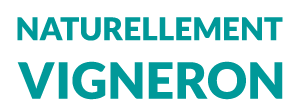
 Homme Homme |
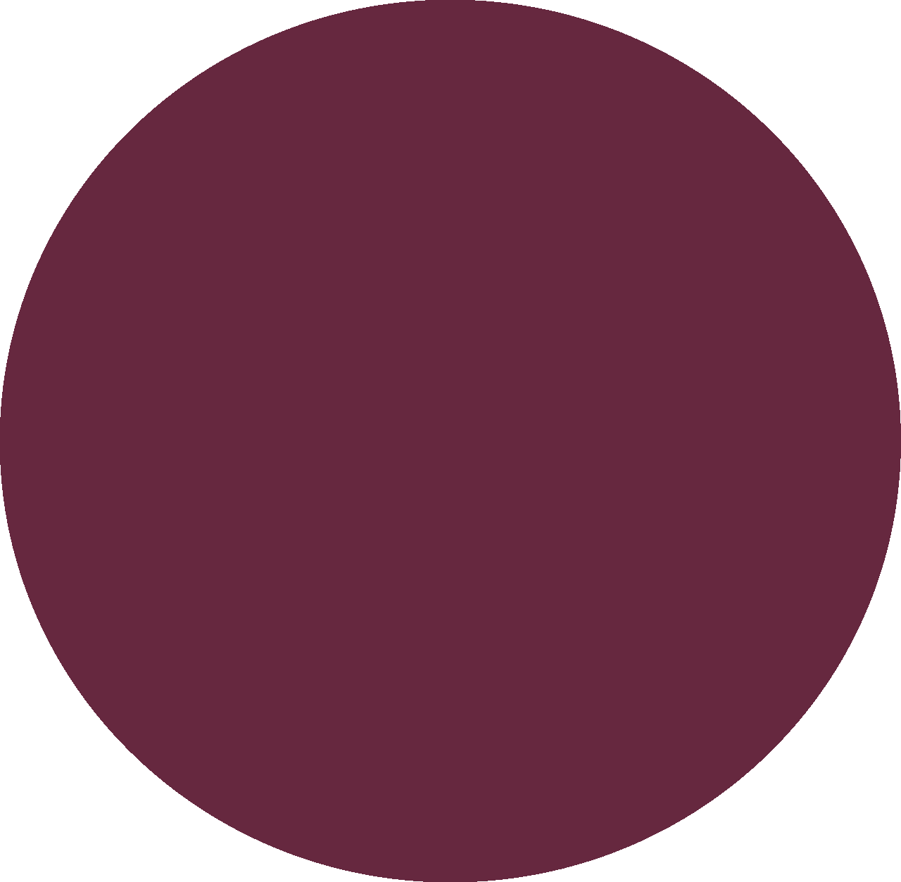 Femme |
Un milieu majoritairement masculin
4% seulement des vignerons pensent qu’une reconnaissance officielle des vins naturels est nécessaire.
45% d’entre eux refusent d’intégrer l’association des vins naturels (AVN).
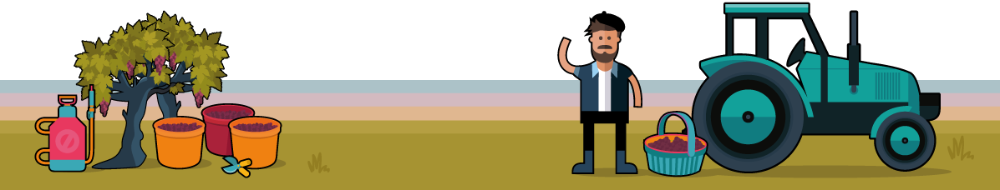
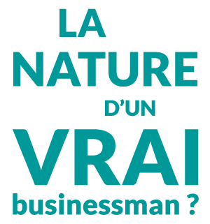
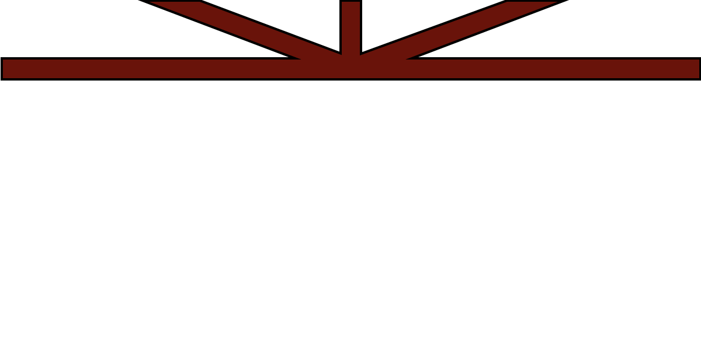
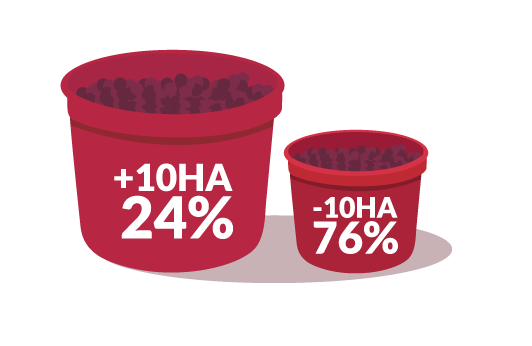
Rendement annuel par hectare :
La vente de vin naturel permet-elle aux vignerons de subvenir à leurs besoins ?
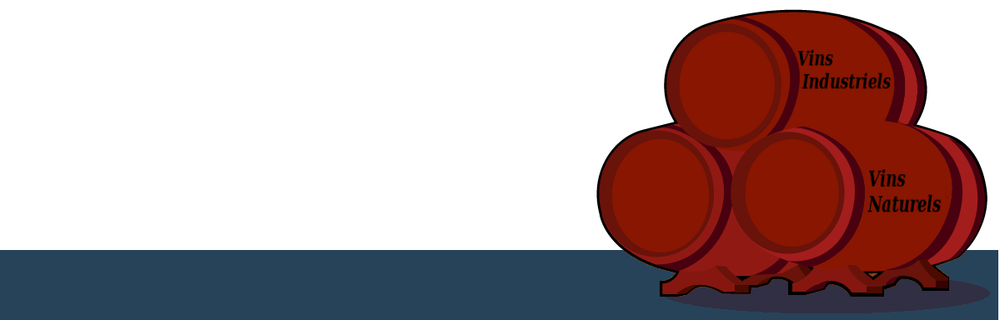
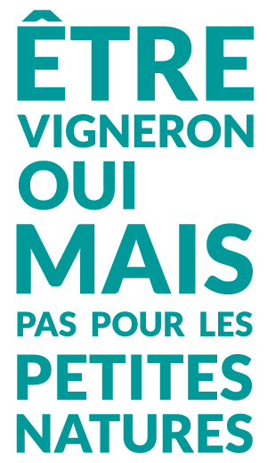
Ce que pensent les vignerons de leur métier
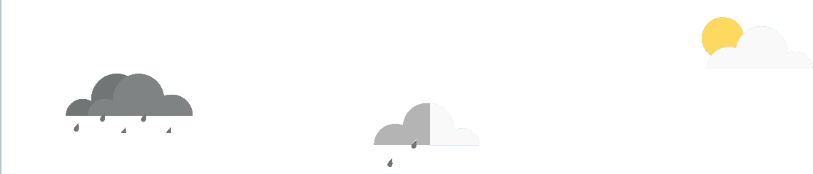
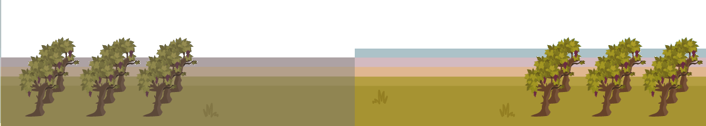
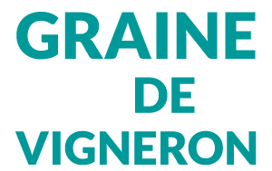
2008 L’année du vin naturel ?
61% des vignerons qui ont répondu se sont installés après 2008. Sept fois sur dix, ces derniers exerçaient un autre métier.
Malgré leur “jeunesse” au sein de cette profession, ils semblent plus intransigeants vis à vis du soufre. 80% d’entre eux produisent des vins sous la norme proposée par l’AVN (20 mg\l de SO2 total pour les vins rouges et 30 mg\l de SO2 total pour les vins blancs).Ce phénomène peut-il s’expliquer par la volonté d’un retour aux sources ?
Les vignerons naturels ont ce lien très fort avec la nature, un goût prononcé pour le vivant. Pour 87% d’entre eux, cela donne un meilleur goût au vin. Cette relation particulière avec le raisin serait-il un attachement écologique ?
C’est le cas pour 62,5% des répondants. Une chose est sûre : à la question “Pourriez-vous sortir du vin naturel pour produire du vin conventionnel”, les vignerons répondent NON à 99%...

Projet réalisé dans le cadre du
Nous remercions Julie Reux, journaliste, qui nous a fournis les données nécessaires et nous a aiguillé dans la réalisation de ce projet.
Nous remercions également Matthieu L'Hôtellier, qui a accepté de nous rencontrer en entretien, ainsi que les 50 vignerons ayant répondu à l'enquête.
Nous remercions également Matthieu L'Hôtellier, qui a accepté de nous rencontrer en entretien, ainsi que les 50 vignerons ayant répondu à l'enquête.